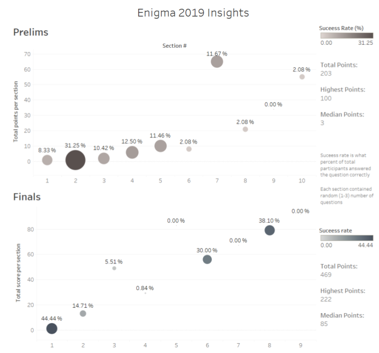

Enigma 2019
About
Enigma is a competitive ciphering and deciphering heist while looking for clues in the gigantic internet universe. Explore some amazing corners of the web-battling out puzzles and reading between the lines. Got stuck on some questions? Work your way out through your search engines.
Feedback
- "Some are mind-bending, some are deep, some are clueless. It's an awesome experience overall." — Sai Krupa Reddy, IIT Tirupati
- "Even though we couldn't come up with proper logics or answers, it was fun!!"
- —Hemangi Doye, IIM Indore
- "Horiffying. Enthralling. We loved it! Enjoyed the ride. Wish to solve many more of these again and again." — Aparna Vadlamani, IIT Tirupati
- "It is an awesome, brain storming event and best one I have ever attempted. I would love to participate even after my B.Tech." — Sai Sumanth Vanka, IIT Tirupati
Insight

Leaderboards
The following list contains the marks scored and team leaders for the respective teams for Enigma2019 Finals.
- 222 / 469 Raghav Dhawan
- 203 / 469 Jakku Sai Krupa Reddy
- 202 / 469 Sai Sumanth Vanka
- 201 / 469 Aakash Yadav
- 151 / 469 Rutvik Bade
- 146 / 469 V Dheeraj
- 143 / 469 A Chaitanya
- 123 / 469 Manoj kumar
- 116 / 469 VASUNITH KISLAY
- 101 / 469 Sriram
- 85 / 469 Rohith Sudheer
- 83 / 469 Reena Deshmukh
- 79 / 469 Aparna Vadlamani
- 69 / 469 Bodapati Nirupama Sai
- 68 / 469 Ajinkya Kamble
- 67 / 469 Raj Garg
- 66 / 469 Shubhankar Bhadra
- 66 / 469 Abhishek Kumar
- 66 / 469 Shaik Irfan
- 39 / 469 Nandita V Nair
Questions
Prelims questions were created by both Anup Kulkarni and I. Questions for finals were created by me. Questions could be found here: prelims | finals